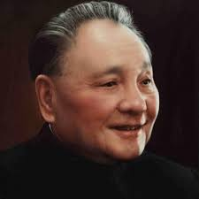

邓小平
邓小平（1904—1997），四川广安人，中国共产党杰出领导人和改革开放总设计师。他长期从事革命工作和国家建设，对中国现代化发展作出了卓越贡献。
邓小平具有卓越的战略眼光和坚定的政治信念，领导改革开放和现代化建设，推动国家发展进入新时期。他注重实事求是、改革创新，为国家发展制定了科学方针。
在家庭生活中，邓小平注重诚实、勤俭、正直和责任感。他教育子女和后辈要爱国敬业、遵守纪律、服务社会，以实际行动传承红色家风。
邓小平的革命事迹和家风教育，为四川及全国红色教育提供了宝贵榜样。他的精神和理念激励后人投身国家建设和民族复兴。
← 返回中国地图